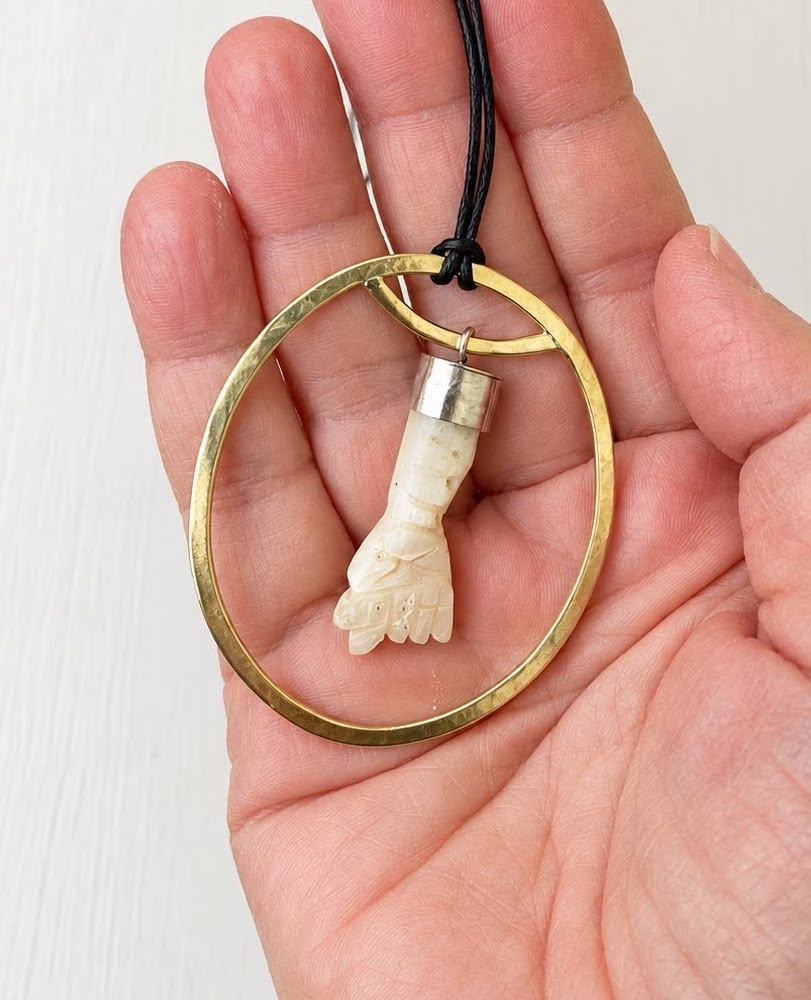

Gioielli contemporanei
che raccontano una storia
Ogni gioiello parla di connessioni tra passato e presente, tra progetto e concetto, tra bellezza e significato.

Ayen Collection
Ayen significa "occhio" in amarico. La collezione nasce dai primi disegni del figlio della designer: occhi, volti, il sole, tracciati in linee irregolari e spontanee. In quei segni Alessia ha dato corpo alla propria esperienza di vita, trasformandoli in gioielli dedicati alla famiglia e al legame che la tiene unita.
Ogni gioiello è realizzato in filo di ottone e argento, saldato e martellato. I colpi del martello danno al metallo luce e movimento e rendono ogni pezzo unico.
Indossabili in molteplici combinazioni: un bracciale diventa un pendente, una collana si reinventa. Ogni pezzo è un invito al gioco: è chi lo indossa a decidere come portarlo, rendendo ogni combinazione interamente sua.

Lib Collection
Lib significa "cuore" in amarico, un luogo interiore dove tutto ha inizio. Ispirata alla mostra "Dove nascono i cuori", presentata a Gorizia Capitale Europea della Cultura 2025, la collezione trasforma il cuore anatomico in linee essenziali e scolpite. Minimalista e profondamente sentita.

Jade Collection
Jade celebra la bellezza e l'aura delle giade orientali. Ogni pendente è una giada unica ispirata agli antichi disegni di draghi e all'iconografia storica cinese e valorizzata da una collana contemporanea in ottone e argento. Tre cerchi intrecciati: continuità, armonia, il ciclo Cielo-Uomo-Terra.
Il design che incornicia ogni giada è volutamente minimale e sobrio: una struttura silenziosa che si fa da parte per lasciar parlare la pietra. Ogni scelta nella lavorazione del metallo esiste per esaltare la gemma, non per competere con essa. Ogni collana è un pezzo unico perché ogni giada esiste una sola volta e non si può riprodurre.
Le giade sono talismani di protezione, di buona fortuna e di armonia, quell'equilibrio tra ciò che si è e ciò che si vive.
"Trovo sempre l'occasione per indossare la mia collana con giada."Tiziana, Trieste

Limited Edition
Gioielli in pochi esemplari, nati da un simbolo o da un gesto quotidiano e ripensati in chiave contemporanea: oggetti da collezione da indossare e custodire, presentati una volta l'anno.
Fiha, il gioiello portafortuna
Fiha è la prima Limited Edition: una collezione di amuleti portafortuna ispirati alla mano fico, antico gesto di protezione. Piccole mani in madreperla intagliata, sospese in un ovale di filo d'ottone come un antico cammeo.